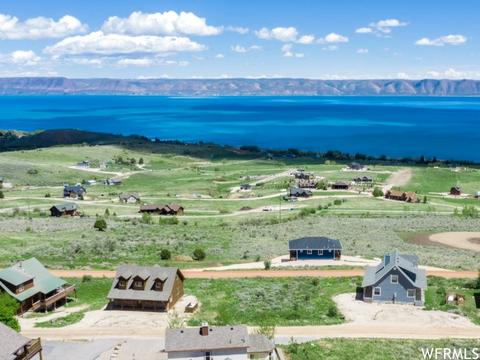

3 Bait Tips for Catching Big Bass This Summer
The dog days of summer are upon us, and both anglers and the fish are feeling it.
Its time to change up your tactics if you want to hook into more big bass.
Most veteran bass anglers know that big swimbaits, chatterbaits, and spinnerbaits are go-to lures.
But the baits that I will focus on have likely been overlooked by most anglers that target trophy fish.
And thats good news for you, because fish havent seen much of them yet.
Here are the best baits for catching big bass when the heat of summer is on.
Keep a Drop Shot Rig on DeckLake Chickamauga in southeastern Tennessee has become known as a bass factory.
It produces monster bass north of 10 pounds year after year thanks to the stocking efforts by the state.
Anglers come from far and wide to hook these fish, many rushing to the ledges with scroungers, big swimbaits, and big jigs.
Many locals, however, will keep a drop shot on deck.
The drop shot is a finesse tactic thats largely associated with smallmouth bass, but youll also see it being used by pro bass anglers when the bite is especially tough.
With the amount of pressure Chickamuaga has seen over the last decade, these big fish are highly educated, and often the drop shot is the bait that gets them to commit.
On the rocky ledges I like using tungsten tear drop style weights, as they tend to get hung up less, and the tungsten has a clean sound on the rocks as opposed to lead weights.
Fishing grass, I switch to lead cylinder style weights because they are much easier to reel in through the grass than round or tear drop weights.
Plus, you dont need the sound of tungsten in grass. You can experiment with a variety of baits like flukes and straight tail worms.Rig the 10-Inch
Power Worm Three WaysThe 10-inch power worm is arguably the bait thats caught more 10-pound bass than any other bait in the history of fishing.
Its popular, but you can rig it in a few different ways to offer a unique presentation.
Whether youre fishing it on a light Texas rig up shallow, or dragging it on a ledge, the power worm will catch giants year-round.
It catches big bass, likely because it emulates large nightcrawlers, snakes, and lampreys that large fish make regular meals out of.
Anglers can swim this big worm, drag it, or hop it. The big power worm is most commonly fished on the Texas rig, but can also be used on a Carolina rig when
the fish go deeper, or even on a shaky head. Use a Glide to Locate Big BassWhen youre targeting trophy bass, you have to take a little different approach
than when youre just fishing for fun. They are known to pattern a little differently, and your run-of-the-mill bait selection may not be enough to trigger them to bite.
This is where Glide baits come in handy. Glides are tantalizingly realistic in both look and action, and can be fished in a variety of different depths and locations,
though they work best in clearer water.Read Next: Kristine Fischer Caught Two 11-Pound Florida Bass in The Same Day.
Heres How She Did it Keep in mind, many anglers may also use glides to simply find where the big fish in the lake are,
as these fish get mesmerized by the bait and will often follow it back to the boat, helping the angler locate them.
Big fish are more likely to follow big glides, so a good place to start for anglers new to glide-bait fishing is a bait around 7 inches long.
You can easily find a glide to fit the main forage of your lake, and if youre hunting for that trophy, this can be the bait to put her in the boat.